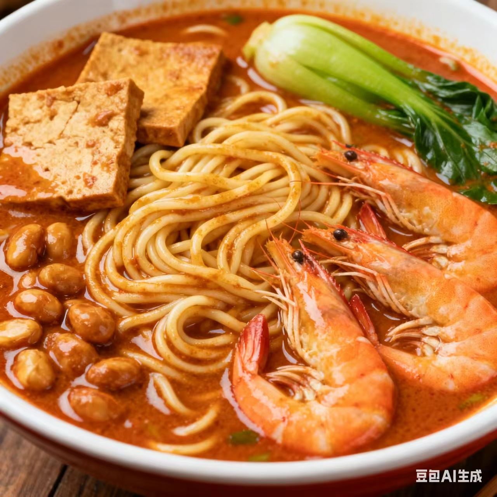
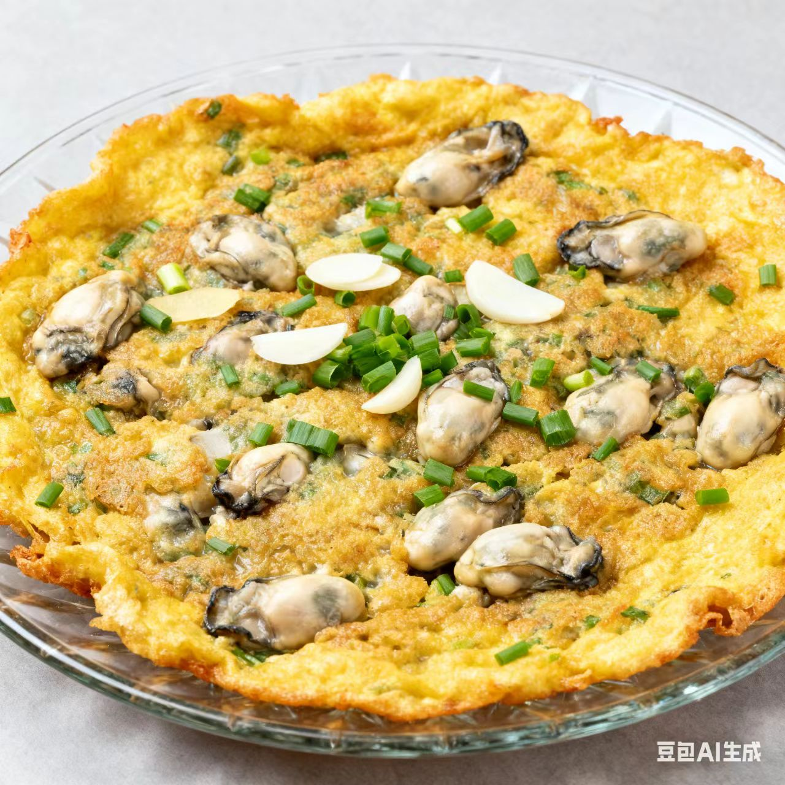

闽菜 · Min Cuisine
咸鲜醇厚里的北方烟火与宫廷余韵鲜醇馥郁里的山海交融与侨味风情
一、起源与历史
闽菜发源于福建（古闽越地区），唐宋因海上贸易融合南洋风味，明清形成“福州、闽南、闽西”三大流派，烹饪思想强调“鲜爽为核”，讲究“香、味、形、器”的精巧结合
二、地理与气候影响
福建山海相依（海鲜、山珍、笋菇资源富集），气候湿热让饮食偏向“清润祛暑”，同时侨乡文化的渗透，让闽菜融入了东南亚的调味与食材
三、主要烹调技法
- 炒
- 糟
- 焗
- 扒
- 熘
每种技法都重“入味不夺鲜”，如糟菜借酒糟增香，煨菜软嫩醇厚，蒸菜保留本味
四、代表菜肴
-
佛跳墙

-
沙茶面

-
海蛎煎

五、风味与审美
闽菜的独特在于“以鲜为底、以香为韵、以润为魂”，追求浓而不腻、淡而不寡的平衡，味觉逻辑体现了福建人“山海兼容、开放包容”的生活态度
六、文化意象
闽菜不仅是饮食，更是闽地“山海文化+侨乡文化”的载体——从高端宴席的“佛跳墙”到街头的“沙茶面”，闽菜承载了“远洋乡愁与本土烟火的交织”
七、地方俗语
一汤十变，百菜百味
闽菜鲜，鲜在山海一口鲜
拓展视野：视频
拓展视野：学术资料
| 研究论文 / 报告名称 | 链接 |
|---|---|
| 《舌尖上的闽南味·舌游漳州省级精品在线课程与闽南文化教育融合研究》 | 查看论文 |